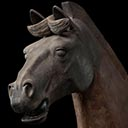

Inside The Mausoleum
Clay Soldiers
Platoons of clay soldiers were buried with China’s first emperor, Qin Shi Huang Di, to accompany him during his eternal rest.

Clay Horses
In some of the corridors, clay horses are aligned four abreast; behind them are wooden chariots.

Weapons
The Army’s weapons has revealed that the craftsmen responsible for them followed a sophisticated labour model now associated with Toyota.
Bronze Chariot
Bronze Chariot in the Mausoleum is the general designation of two large-sized color painted bronze chariot unearthed in 1980.